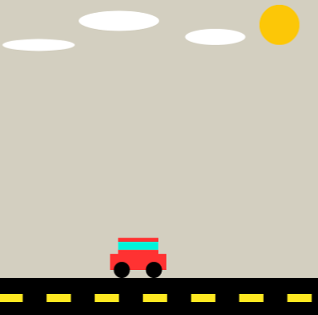
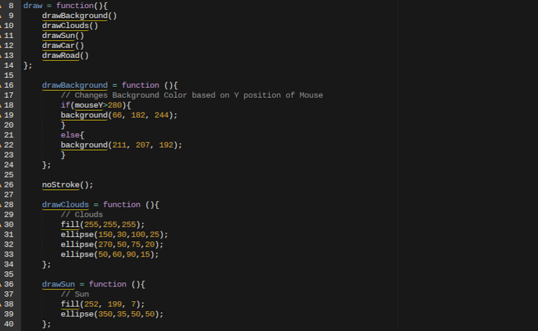

In the Generative Art project, I created a art piece that reflected what I am. The art piece is a car moving acrooss the page to represent the car traveling to new places which reflects my personality, because I like to try new things and enjoy cars.
I created this specific xart piece because I wanted to connect my interest of cars with my work in class.
The project work overall was difficult in some spots but definately I gotten used to it over time. Learning Javascript is sort of difficult since it is different compared to Hypertext Markup Language (HTML). The project work was sometimes very satisfying by getting a wonderful end result
when completed and done right. But I am happy to expand my skills and learn more to incourperate in a actual program.
Above is a if/else statement and it works by running the if statement in the parameter to see if it is true. If the statement is true then the codeblock will run below it. The else statement is usually below the if statement and the code block. When the if
statement is untrue then the else statement will run along with the code block below.
The code displayed above is a while loop. In the while loop you can write in the code block what specific thing you want to run over and over again. The loop will run until you designate a stopping point. Loops are very help for doing a of the same thing over and over again.

A choice that I made towards the end of the project is to make independent functions for each object. Each object is in a smaller draw function and I made this by including more Draw functions with different names to make them unique. I then put all of the functions from the objects into a
general draw function which made the page work. In order to have the page look right, I had to put the smaller object functions in a order where the objects wouldn't block each other.
In this round of expeditions, I learned how to be use and become more proficent at Javascript. Having this skill of Javascript will prove to be very useful in the near future since I might want to work in cyber security. I find that working with code that I'm not used to is very satisfing
getting it right. I also learned how to incouperate it into my navbar which links all of my projects and how to pages together.
If I could make any improvements to my project I would specifically try to add more ways to interact. For example, I wanted a person to be able to click anywhere on the page and it would allow you to draw trees. This never happened due to the fact that I already had a draw function which kept
creating a new background over the previous image. If I had more time, I would find a way to persist and make it work.